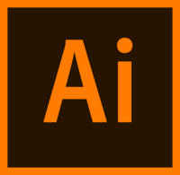
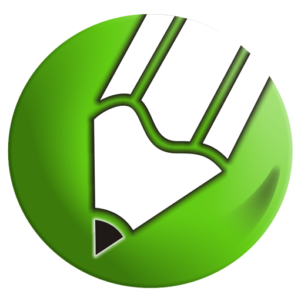

¡Hola! soy Carlos David Pérez
y soy diseñador gráfico¡Hola! Si estás aquí, es porque quieres saber un poco más sobre mí, por eso, te voy a contar un poco quién soy, a qué me dedico, y cómo te puedo ayudar.
Nací en Barcelona capital, aunque he vivido toda la vida fuera pero muy cerca de ella. Me gusta tener la ciudad cerca, pero prefiero los sitios más tranquilos para vivir. Como no sabía muy bien qué estudiar, cuando llegó la hora de decidir, me puse a estudiar informática, porque era lo que más me llamaba la atención en aquel momento.
Eso me llevó a trabajar como informático algunos años, cosa que me hizo darme cuenta de que no me gustaba lo que hacía, ni me veía toda la vida intentando arreglar los marrones de los demás. Por ese motivo, desde que perdí mi último trabajo, no envié ningún curriculum más y decidí dedicarme a algo que realmente me gustara.
¿A qué me dedico?
Actualmente, me dedico profesionalmente al diseño web con WordPress a tiempo completo. Es un trabajo que me encanta y que me permite disfrutar, por fin, de pasar horas y horas delante del ordenador, cosa que nunca antes me había sucedido.
A lo largo de este tiempo, he podido trabajar con más de 30 clientes de alrededor del país y del mundo, y he creado y diseñado más de 60 webs, gracias a lo cual he ido mejorando cada día más, perfeccionando la técnica y la creatividad a la hora de realizar nuevos proyectos.
Realizo webs para particulares y empresas, sin importar su tamaño, aunque también colaboro directamente con agencias que necesitan externalizar el diseño web y deciden contar conmigo para crear las webs de sus clientes. Sea cual sea tu caso, no dudes en contactarme.
¿Cómo puedo ayudarte?
Diseño Litográfico
Nuestros servicios profesionales enfocados al diseño e impresión litográfica, nuestra maquinaria, como nuestro equipo de profesionales en las artes gráficas nos permite realizar grandes producciones con altos estándares de calidad.
Diseño tienda online
Te creo y diseño una tienda online completamente funcional con WordPress y WooCommerce para que puedas comenzar a vender tus productos. Da igual que tenga pocos o miles de productos.
Mantenimiento web
Me encargo de tener tu web hecha con WordPress al día y sin problemas, manteniéndola actualizada, optimizada, creando copias de seguridad, solucionando los problemas que vayan surgiendo, etc.
Herramientas de mi Dominio
| Photoshop | Ilustrator | CorelDRAW |
|---|---|---|
|  |  |